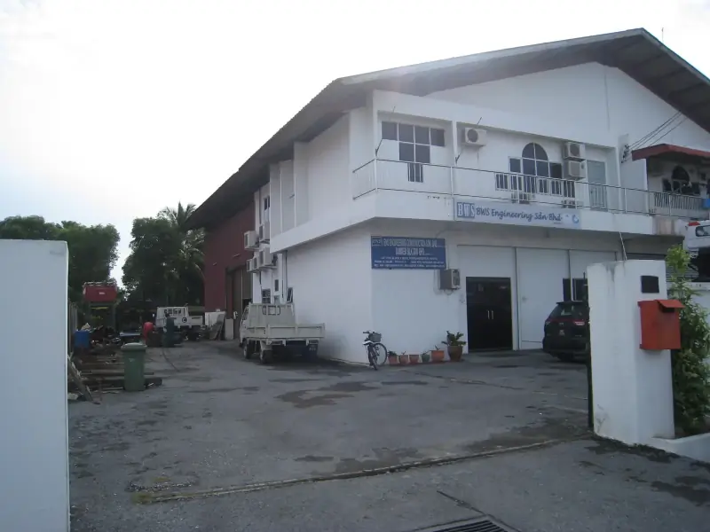

Miri · Main Office
Piasau Industrial Estate
The company owns an industrial building at Piasau Industrial Estate, Miri, which serves as its main office, warehouse and fabrication workshop for civil, building, structural, mechanical, piping, and electrical & instrumentation construction and maintenance work.